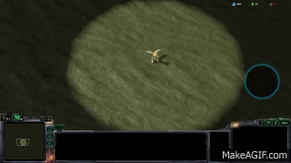

Import the model into your map via the StarCraft 2 editor’s import tab. The path for the M3 file doesn’t matter, but the texture must be under the path “Assets/Textures/”. Note that your model’s textures will not display in the editor until you close and reopen it. Alternatively, you can edit a unit to use your model via the StarCraft 2 editor’s Models tab and preview it in game.
For most super smash bros models, a few common steps are needed to make the model appear correctly in game.
1. Change the "Walk animation movement speed" value for your model's actor to 6.0 If the unit using your model still plays its walk animation too quickly relative to the distace it moves (as if they are slipping on ice), a higher value is necessary.
2. Scale the model down slightly via the Scale min and Scale max fields for your model's entry in the models tab. The amount of scaling is a matter of preference, but on average 0.8 should work for most heroes and 0.6ish for regular units. Since the model used in this tutorial is a short character I chose 0.7 for a combination of realism as a hero and fairness so other players could click on the model easily.
If you followed all the stes correctly, you should get something like this:
Return to Index